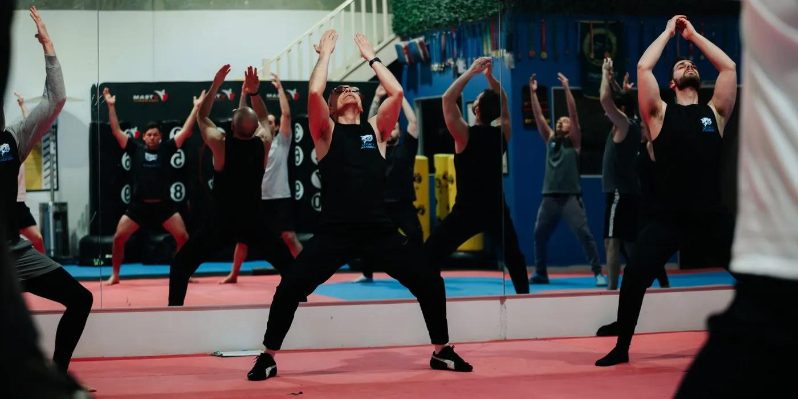
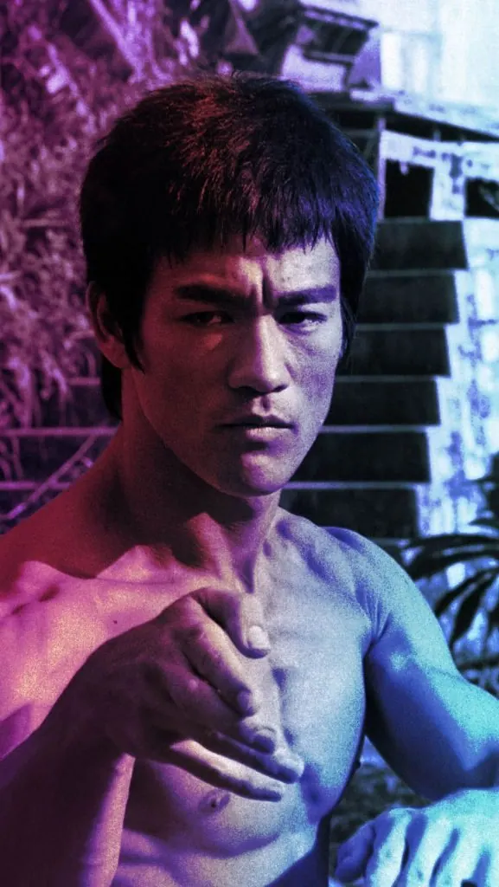
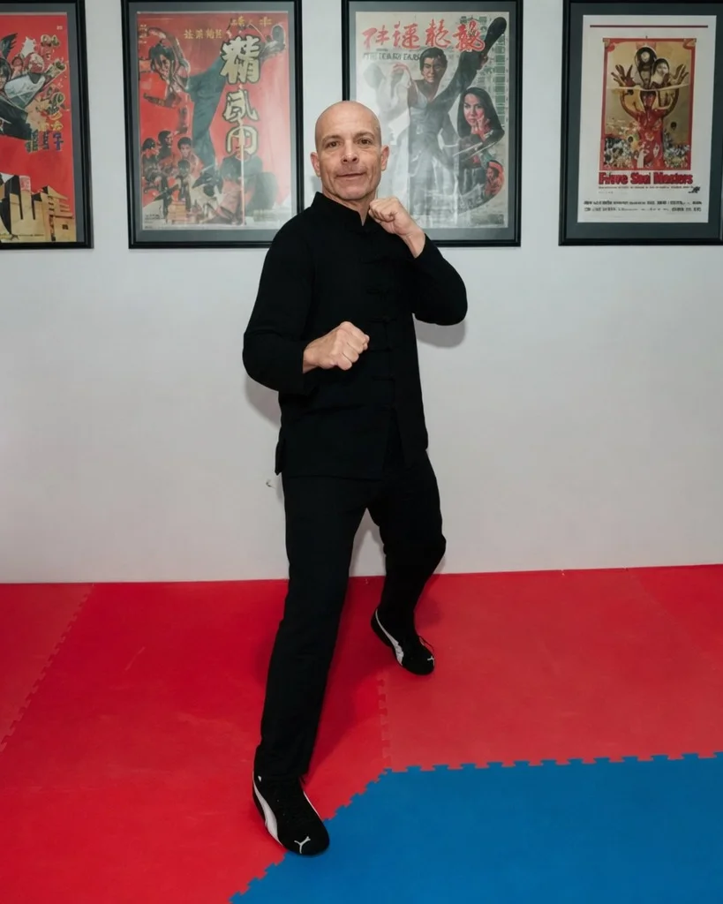

The Direct
Lineage
of Bruce Lee.
Authentic Jeet Kune Do under Sigung Ricardo Vargas — second-generation instructor certified by Sifu Jerry Poteet and Sigung Richard Bustillo, both direct students of Bruce Lee.

The Art of
Expressing the
Human Body.
Jeet Kune Do — the Way of the Intercepting Fist — is a philosophy of personal development founded by Bruce Lee. Far more than a fighting system, it is a method for self-awareness, efficiency, and adaptability across every domain of life.
By integrating principles from diverse disciplines, JKD encourages each practitioner to absorb what is useful, discard what is not, and add what is uniquely their own. It is a path of continuous self-improvement — empowering you to respond to life's challenges with precision, confidence, and authenticity.
Explore The Way →
"Using no way as way,— Sijo Bruce Lee
having no limitation as limitation."

Sigung
Ricardo Vargas
A second-generation student of Bruce Lee, Sigung Vargas carries one of the most authentic lineages of Jeet Kune Do in the world — personally trained and certified by Sifu Jerry Poteet and Sigung Richard Bustillo.
Blending three decades of practice with academic credentials in philosophy and theology, he offers a rare and powerful approach that unites combat skill, personal growth, and purposeful living.
- Full Instructor Certification — February 17, 2015
- Founder, Adelaide Kwoon (2011) · Melbourne HQ
- U.S. Martial Arts Hall of Fame · Outstanding Martial Artist of the Year (2013)
- Master's Degree in Theology and Philosophy
Three Stages.
One Lifelong Journey.
Whether you are taking your first step or refining a lifelong practice, the academy offers a structured path from foundation to mastery.
The Tao of
Jeet Kune Do
12-Week Beginner Program
Build the fundamentals of philosophy, guard, footwork, striking, kicking, and trapping under direct supervision.
Discover →The Combat
Scientist
Intermediate Curriculum
Jun Fan Kickboxing, wooden dummy, grappling, and the five ways of attack — refined through scientific application.
Discover →The Philosophical
Warrior
Private Mentorship
One-on-one guidance with Sigung Vargas for advanced students seeking deeply personalised development.
Discover →The Disciples of
Bruce Lee.
Seven extraordinary martial artists who trained directly under Sijo and carried his teachings forward — the bridge that connects today's academy to the source.
Questions About
Training With Us.
Straight answers about Jeet Kune Do, our lineage, locations and memberships.
What is Jeet Kune Do?
Jeet Kune Do (JKD) is the martial art and philosophy founded by Bruce Lee. It is not a fixed style but a method of self-discovery — absorb what is useful, discard what is not, and add what is uniquely your own. At The JKD Legacy Academy we teach authentic JKD in Bruce Lee's direct lineage.
Where is The JKD Legacy Academy located?
Our headquarters is at Unit 6 / 72-80 Hampstead Rd, Maidstone VIC 3012, in inner-west Melbourne (near Maribyrnong and Footscray). We also run an Adelaide Kwoon in South Australia.
Who is the head instructor?
Sigung Ricardo Vargas, a second-generation Jeet Kune Do instructor certified by Sifu Jerry Poteet and Sigung Richard Bustillo — both direct students of Bruce Lee.
Do I need previous experience to start?
No. Most students start with no martial-arts background. The 12-week Foundation program is built for complete beginners, and every session includes one-on-one corrections.
How much does training cost?
Memberships are in Australian dollars: 3-Month Unlimited A$650, Monthly Unlimited A$240, a 12-Session Flexible pack A$350, or a 5-Session Flexible pack A$175. A free trial class is available.
How do I join?
The Academy is a private-membership Kwoon, so it begins with an inquiry rather than a drop-in. Submit the form on our Join page or call 0459 785 073, and Sigung Vargas will personally reach out to schedule a conversation.
Become a Third-Generation
Student of Bruce Lee.
The JKD Legacy Academy is a private membership Kwoon. Admission begins with a conversation. Submit your inquiry to schedule a consultation with Sigung Vargas.
Begin Your Journey →